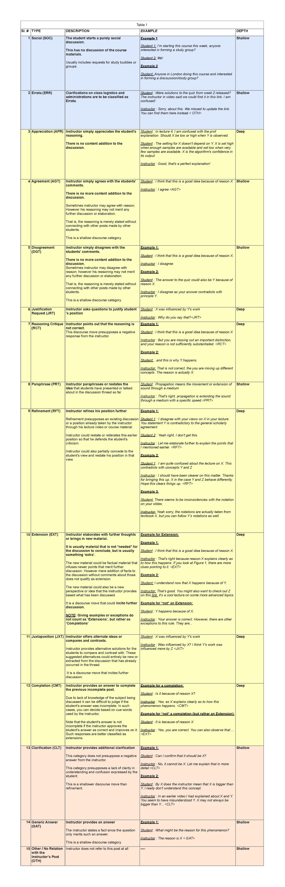

About:
- Categorise all the post(s) in relation to the Instructor's post (from the dropdowns below the post).
Important! The list of reply types with an explanation and a suitable example is provided below. Please refer to this while you annotate.
Choose a 'shallow' type when none of the deep types fit.
*Personal identifiers including names, user_names and the like of
all the participants have been hidden to protect their privacy.
Instructor Reply types with examples:
